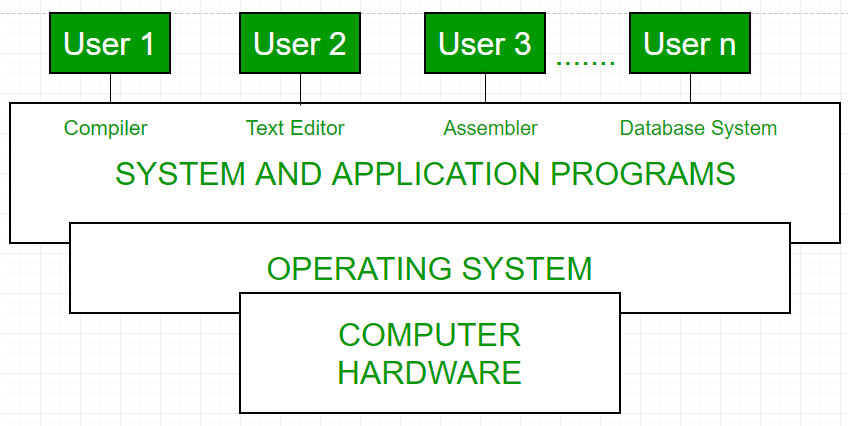

Introduction of Operating System
Defination :-
An operating system acts as an intermediary between the user of a computer and computer hardware.
The purpose of an operating system is to provide an environment in which a user can execute programs
conveniently and efficiently.
An operating system is a software that manages computer hardware.
The hardware must provide appropriate mechanisms to ensure the correct operation of the computer system and
to prevent user programs from interfering with the proper operation of the system.
Functions of Operating system :-
Convenience: An OS makes a computer more convenient to use.
Efficiency: An OS allows the computer system resources to be used efficiently.
Ability to Evolve: An OS should be constructed in such a way as to permit the effective development,
testing, and introduction of new system functions at the same time without interfering with service.
Throughput: An OS should be constructed so that It can give maximum throughput(Number of
tasks per unit time).
Conceptual view of a computer system
